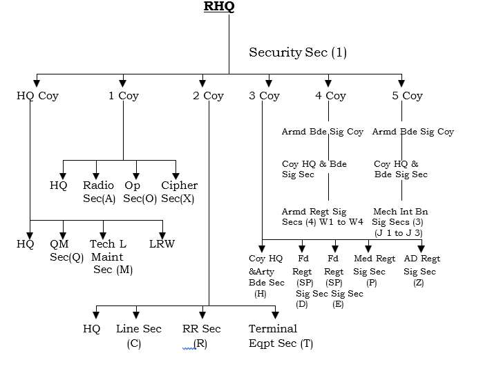
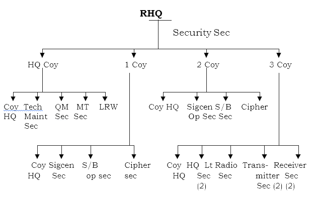

Welcome

Welcome

Welcome

Armoured Corps
In the Inf hy Indian Army, armr cont to be most agile component of the gr based strike force. As the emphasis in the past decade has changed from a gen def posture to that of offn, armr is getting more and more attn by the Indian planners resulting in pronounced expansion as well as mechanization. The strike cap of present armd div is being improved further by introducing latest eqpt and wpns. The pattern and goals of trg have all received stress to enhance offensive emp of armd fmns. To reduce dependence on acquired wpns and eqpt, greater emphasis is being laid on indigenised production of tks, eqpt, wpns and insts.
The Indian Army Armoured Corps is one of the combat arms of the Indian Army. Formed in 1947 from two-thirds of the personnel and assets of the Raj's Indian Armoured Corps. It currently consists of 67 armoured regiments, including the president's bodyguards.[1] The naming of the regiments varies. The terms "Cavalry", "Horse" and "Lancers", which have been dispensed with in the case of units raised post-independence, are historical legacies from the raising and renaming of these units when part of the East India Company's army and/or later the British Indian Army. The Armoured Corps School and Centre is at Ahmednagar. As a matter of tradition, each Armoured Regiment has its own "Colonel of the Regiment", an honorary post for a senior officer who oversees the regimental issues concerning the unit. The Armoured Corps celebrates 1 May as its Corps Day.

INFANTRY
.png) Mech Inf Bn
Mech Inf Bn
.png) R&S Bn
R&S Bn
.png)
.png) Mech Inf Bn
Mech Inf Bn
.png) R&S Bn
R&S Bn
.png)
| Bns | Def | Offn | Total | Remarks |
| Plain Inf | 206 | 146 | 352 | |
| MIB | 3 | 27 | 30 | BMP I&II |
| ATGM | 3 | - | 3 | |
| Para Cdo | 2 | 1 | 3 | |
| R&S | 3 | 2 | 5 |
| Unit | Fmn | Loc | Unit | Fmn | Loc |
| 2 | 2 50 Para Bde | Agra 5 | 50 Para | Bde | Agra |
| 3 | 3 57 Mtn Div | Silcher | 6 | 3 Inf Div | Paratpur |
| 4 | 4 50 Para Bde | Agra 7 | 3 Inf Div | Nubha |
| Unit | Fmn | Loc |
| 1 ASF | (1 Para) 2 Corps | Nahan |
| 2 ASF | (9 Para) 16 Corps | Udhampur |
| 3 ASF | (10 Para) 12 Corps | Jodhpur (Presently emp on IS IHK) |
| Unit | Fmn | Loc | Remarks |
| 15 Gd | 16 Corps | Mirthal | Milan |
| 17 Gd | 12 Corps | Pokaran | """ |
| 19 Gd | 11 Corps | Chandi Mandar | """ |
| Unit | Fmn | Loc | Remarks |
| 12 Gd | 11 Inf Div/12 Corps | Jasai |
| 17 Mech (R&S) | 18 RAPID(s)/10 Corps | Lalgarh Jattan |
| 19 Mech (R&S) | 24 RAPID(S)/10 Corps | Udasar |
| 23 Mech (R&S) | 16 Corps | Rukhmuthi |
| 24 Mech (R&S) | 12 Inf Div | Jodhpur |
| Eqpt | Msls | Range |
| BMP-1 | Konkurs | 4000 M |
| BMP-2 | Spanderal | 2500 M |
| BRDM-II | Saggar 3000 M ATGMs | Milan 2000 M |
ARTILLERY
The Regiment of Artillery is an operational arm (a regiment/corps) of the Indian Army. Regiment was raised in 1935, After the partition of India in 1947 Regt was divided between the newly formed artillery regiments of India and Pakistan. The School of Artillery of the Indian Army is situated at Devlali near Nashik. In the Indian Army, there are 3 Artillery Divisions. They are 40 Artillery Division (Ambala, Haryana) under Western Command, 41 Artillery Division (Pune, Maharashtra) under Southern Command and 42 Artillery Division (Alwar, Rajasthan) under South Western Command.
Since the war will be fought under a nuclear overhang, particularly with Pakistan, there is a fair possibility that both sides will strive to ensure that it remains confined to the mountains so that it does not escalate out of control to nuclear exchanges. Hence, some say it is time for India to pivot to the mountains in its quest for building military capacities.
TThe Regiment of Artillery is an operational arm (a regiment/corps) of the Indian Army. Formerly part of Royal Indian Artillery (RIA) of British Indian Army which itself traces its origins to the formation of Bombay Artillery in 1827. It was later involved in extensive service in the First World War, in East Africa, Gallipoli, Mesopotamia and Palestine . Today it is the second largest arm of the Indian Army, and with its guns, mortars, rocket launchers, unmanned aerial vehicles, surveillance systems, missiles and artillery firepower it constitutes almost one-sixth of its total strength. It's motto is Sarvatra Izzat-o-Iqbal (Everywhere with Honour and Glory), the Hindu-Urdu equivalent of the Royal Artillery motto Ubique Quo Fas Et Gloria Ducunt (Everywhere That Right And Glory Lead), and it shares the same symbol but with the Star of India in place of the Royal Crown, the Hindu-Urdu motto honors the memory of the Hindu and Muslim gunners who fought during the Indian Rebellion of 1857.
ENGINEERS
The characteristics of various types of brs held by the Indian army are given below:-
a. Expl. A 200 m long and 8 m wide lane can be prep in 3 mins using Giant Viper or other expl means.
b. Mech. One tp of trawl tks can provide a lane 5 m wide and 600 m deep in 2.5 hrs.
a. Mech Mine Layer - Mk-II. 4.3 m long, 1.6m wide and 1.65 m high Mech. Mine layer has a crew of 5 incl dvr. Mine laying rate 400-500 per hr with the spacing o3,6,9 and 12 m.
b. Mine Sweeping Trawl - KMT-5M Consists of rollers and plougs with total wt of 7.5 tons. Planning time of fitting the Trawl 30 mins by day & 45 mins by ni. Mine trawling speed is 3-5 kmph. The travel roller can sustain upto 10 blasts of A tk mines.
c. Mine Sweeping Trawl - KMT-6. Its wt is 1000 kg, is Hydraulically op with its plouging speed of 6-15 km in first gear.
a. Two engr regts can lay 25-30 kms of tr with 50% of tr way material on home bank in one day.
b. One engr regt can lay 8 kms of tr at ni.
c. An engr unit can carry out improvement of tr upto fol dists by using stores as under:-
d. Duck Boarding
SIGNALS
This is the basis unit, which is suitably modified to op with the armd and mtn fmns.
It differs from the org of an inf div sig regt in the no of pers, no and type of vehs and eqpt auth. The tpt in the mtn div sig regt is based on 1 ton, whereas in an inf div, sig regt it is based on 3 ton vehs.
It differs from the org of an inf div sig regt in the no of pers, no and type of vehs and eqpt auth. The tpt in the mtn div sig regt is based on 1 ton, whereas in an inf div, sig regt it is based on 3 ton vehs.
The OC corps sig regt is a unit comd only and not a sig SO. This later function is performed by the Chief Sig Offr who is incl in the org of a Corps HQ. The org of corps sig regt is tailor made for each corps depending on the ops req. Org of typical corps sig regt is given below
Due to large areas of resp of a Corps, each Corps is also altd a comm Z sig regt to supplement the sig resources within Corps. Org on similar lines as a corps sig regt, it may also be altd addl Corps tps to supplement a corps sig regt when req.
Two such regts serve a fd army HQ. The estb of army sig regt is built up on the brick system. Their work is coord by HQ Army Sigs and comd by a Col asst by a small staff.
The main components of the Indian Army Sig int set up are:-
This dte is an inter svc org and con 16 EW sig units spread over the entire length of the country and a EW sigcen.
The gp of secs under coys is not uniform but is dependent on monitoring load.
.png)

AVIATION
The Army Aviation Corps is a component of the Indian Army, formed on 1 November 1986. The aviation arm is headed by a Director General of the rank of Lt General at the Army HQ, New Delhi. The army aviation pilots are drawn from other combat arms, including artillery officers, to form a composite third dimensional force for an integrated battle. IAF operates & flies attack Helicopters like the Mil Mi-25/Mi-35 and HAL Rudra which are owned and administered by the Indian Air Force, but under the operational control of the Army & play a major role to support the armoured columns and infantry.
In 1984, the Indian Army's Northern Command inducted the HAL Cheetah into the Siachen Glacier. The pilots were put to the ultimate test professionally and also in terms of human endurance. In 1986, the "Air Observation Post" units were transferred from the Indian Air Force to the Indian Army to form the Army Aviation branch. Using nine helicopter squadrons, Army Aviation has supported ground units by carrying men and material in the highest battlefield on earth, culminating in the conquest of the entire 72 km of the Siachen Glacier. Innumerable skirmishes and confrontations are taking place in the ongoing operations in the Siachen Glacier and the Army Aviation Corps is providing the required support for sustenance of troops.
The Sri Lankan operations saw full-fledged jungle warfare application of the army's aviation resources in extremely hostile conditions. The Corps won laurels for its daring performance in the face of all odds. The Corps has also been operating in the jungle, mountain and riverine terrains of India since long.
A unit of the Army Aviation Corps had the unique distinction of operating in Somalia, as part of UNOSOM-II (United Nations Operation in Somalia-II), from October 1993 to November 1994. During these operations, the flight flew over 2000 hours without any accident and maintained 100% serviceability in an environment akin to desert terrain. Army aviators have also been operating in the desert areas since long. In fact, some of the Army's biggest battles and peacetime exercises have been carried out in the deserts and areas contiguous to the plains of Punjab. The Corps has an exposure of participating in a war-like scenario in the Kargil Conflict.
.png)
.png)